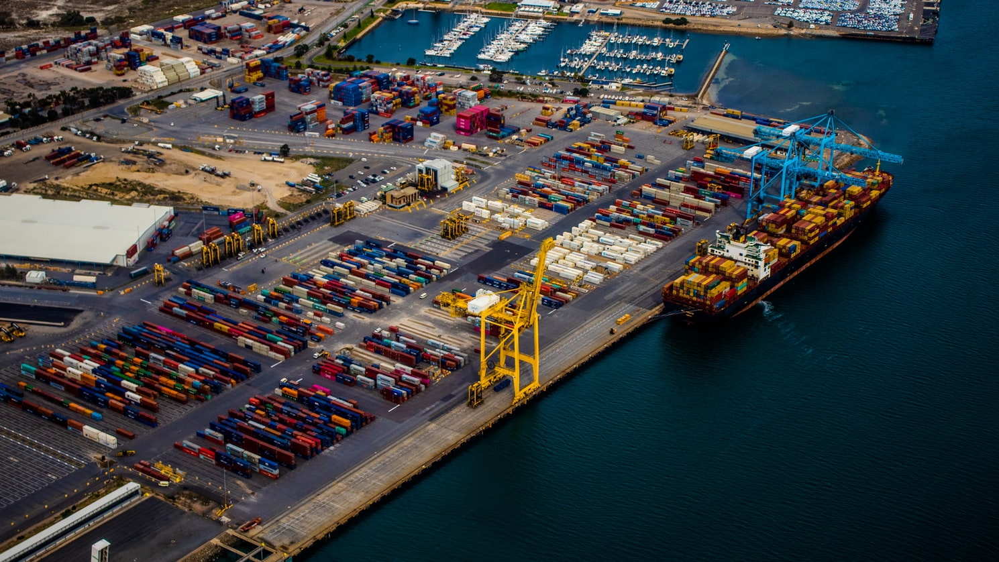

Aģentēšana sevī ietver:
- piestātnes rezervēšana;
- loču, velkoņu, tauvotāju piesaistīšana;
- ostas formalitāšu kārtošana, klīrenss;
- kuģu apkalpes maiņa;
- kuģu apgāde;
- kuģu remontu organizēšan;
- un citi pakalpojumi pēc kuģa īpašnieka, fraktētāja vajadzībām.
Ostas
Mēs nodrošinām aģentēšanas pakalpojumus Latvijas un Igaunijas ostās.
Mums ir izveidota vienotu sistēmu neatkarīgi no tā, kurā ostā ienāk kuģis.
Ostas maksas skatīt šeit.
Darbojamies sekojošās ostās:
Latvijas ostas
- Rīga
- Liepāja
- Ventspils
- Salacgrīva
- Skulte
- Mērsrags
Igaunijas ostas
- Tallina
- Pērnava
- Kunda
- Paldiski
- Miiduranna
- Paljassaare
- Roomassaare u.c.
Pakalpojumu izmaksas
Ostas pakalpojumu izmaksas ir atkarīgas no ostas, kuģa tipa, bruto tilpības, kravas daudzuma, atrašanās pie piestātnes ilguma utt. Ostas maksas tarifi ir noteikti ostu noteikumos. Aģentēšanas maksa tiek noteikta savstarpēji vienojoties. Informāciju par ostas maksām var atrast saitēs uz ostu mājas lapām.
Rīgas brīvostas maksasVentspils brīvostas maksas
Skultes ostas maksas
Liepājas ostas maksas
Tallinas ostas maksas
